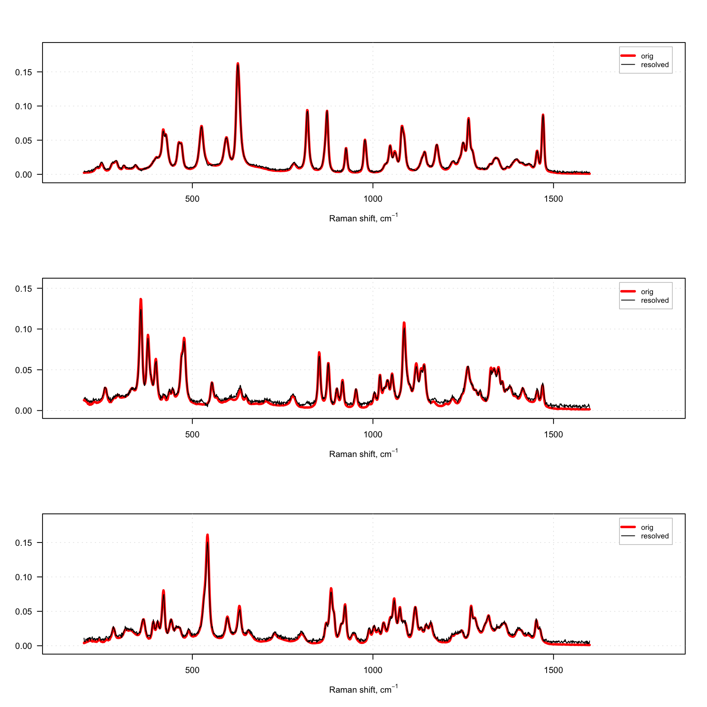

Interval PLS
Interval PLS (iPLS) is a variable selection method used mostly for spectroscopic data proposed by Lars Noergaard at al in 2000. The main idea is try different parts (or intervals — hence the name) of spectra and their combinations to find the most relevant for prediction of a response variable. There are two algorithms — forward and backward.
Forward iPLS
The forward approach works as follows
- Split spectral data into \(N\) intervals
- Create an empty vector with selected intervals
- Create a model where intervals in the vector (already slected) are combined with one of the rest. If combination improves the model, add this new interval to the vector.
- Repeat previous step until there is no improvements.
Apparently, when nothing is selected, on step 3 the algorithm simply create model for every interval available. As you can see, iPLS is based on iterative procedure. If you have 20 intervals you need to create 20 models on the first step, 19 models on the second step and so on.
In mdatools, you can run iPLS selection by using function ipls(). You have to specify matrix with predictors (x) and responses (y), number of components in global model (glob.ncomp), and define the intervals. In addition to that, you can also specify parameters of cross-validation (cv) as well as criterion for selection of optimal number of components (ncomp.selcrit) for local models similar to PLS. Forward iPLS is used as a default algorithm.
Intervals can be defined using one of the following three parameters: number of intervals (int.num), width of an interval (int.width) or specify start and end of each interval as a two-column matrix with variable indices (int.limits). In addition to that, you can specify maximum number of component for local models (int.ncomp) and maximum number of iterations — so method will stop regardless if you have improvements or not (int.niter). By default the maximum number of iterations is limited to 30.
Here is an example of applying iPLS for Simdata (for concentration of second chemical component, C2) using 15 intervals.
data(simdata)
X = simdata$spectra.c
y = simdata$conc.c[, 2, drop = FALSE]
m = ipls(X, y, glob.ncomp = 4, int.num = 15)##
## Model with all intervals: RMSE = 0.027572, nLV = 3
## Iteration 1/ 15... selected interval 6 (RMSE = 0.030405, nLV = 3)
## Iteration 2/ 15... selected interval 11 (RMSE = 0.027882, nLV = 3)
## Iteration 3/ 15... selected interval 1 (RMSE = 0.027509, nLV = 3)
## Iteration 4/ 15... selected interval 2 (RMSE = 0.027243, nLV = 2)
## Iteration 5/ 15... selected interval 13 (RMSE = 0.027210, nLV = 2)
## Iteration 6/ 15... selected interval 12 (RMSE = 0.027201, nLV = 2)
## Iteration 7/ 15... no improvements, stop.As you can see, by default method shows information for every step in the console. Use parameter silent = TRUE to change this behaviour.
From the example above we can see that the global model had RMSECV = 0.027625 with 3 components (by default the method uses systematic corss-validation, “Venetian blinds”, with 10 segments). Creating local models with individual intervals gave the best performance with RMSECV = 0.029830 (interval #6). Combination of the interval #6 with interval #1 (next step) gave RMSECV = 0.0027809. The small improvement was obtained for adding 3 more intervals giving final result with RMSECV = 0.027246 with 5 selected intervals in total (6, 1, 11, 3, 12).
There are several ways to explore the iPLS results both graphically and numerically. First of all, summary will show full information about the selected intervals, including index of variables on both ends:
##
## iPLS variable selection results
## Method: forward
## Validation: venetian blinds with 10 segments
## Number of intervals: 15
## Number of selected intervals: 6
## RMSECV for global model: 0.027572 (3 LVs)
## RMSECV for optimized model: 0.027201 (2 LVs)
##
## Summary for selection procedure:
## n start end selected nComp RMSE R2
## 1 0 1 150 FALSE 3 0.02757234 0.965
## 2 6 51 60 TRUE 3 0.03040477 0.958
## 3 11 101 110 TRUE 3 0.02788242 0.965
## 4 1 1 10 TRUE 3 0.02750915 0.966
## 5 2 11 20 TRUE 2 0.02724335 0.966
## 6 13 121 130 TRUE 2 0.02720961 0.966
## 7 12 111 120 TRUE 2 0.02720089 0.966Also you can see the first step (performance of individual models) and the selected interval by using function plot() for the whole model:

The red curve here is the average spectrum. Bars are intervals, height of each bar corresponds to the RMSECV value obtained for local model made using variables from this interval as predictors (first iteration). Number inside each bar is number of PLS components used in the local model. Green color shows intervals which have been selected at the end of the procedure and dashed line shows error for the global model
You can also see the improvements of RMSECV with iPLS iterations graphically:

Dashed line in this case shows RMSECV value for the global model with all intervals included.
Finally, you can get both selected intervals and corresponding indices of variables (all of them not just interval limits) as follows:
## [1] 6 11 1 2 13 12## [1] 51 52 53 54 55 56 57 58 59 60 101 102 103 104 105 106 107 108 109 110 1 2 3 4 5 6 7 8 9 10 11 12 13 14 15 16 17 18 19 20 121
## [42] 122 123 124 125 126 127 128 129 130 111 112 113 114 115 116 117 118 119 120Also the model object contains the initial global model for full data (m$gm) and final optimized PLS model made using only variables from the selected intervals, m$om. In the following example I compare RMSE plots for both:

Running full procedure
By default the iPLS procedure will stop when no improvement is observed. This means if RMSECV value for the next iteration is not smaller than the RMSECV value for the current iteration. However, you can change this behavior if you set a logical parameter full = TRUE. In this case the procedure will continue until the maximum number of iterations is reached.
Here are some examples. First of all let’s run the same example as in the prevous section with 15 intervals:
data(simdata)
X = simdata$spectra.c
y = simdata$conc.c[, 2, drop = FALSE]
m = ipls(X, y, glob.ncomp = 4, int.num = 15)##
## Model with all intervals: RMSE = 0.027572, nLV = 3
## Iteration 1/ 15... selected interval 6 (RMSE = 0.030405, nLV = 3)
## Iteration 2/ 15... selected interval 11 (RMSE = 0.027882, nLV = 3)
## Iteration 3/ 15... selected interval 1 (RMSE = 0.027509, nLV = 3)
## Iteration 4/ 15... selected interval 2 (RMSE = 0.027243, nLV = 2)
## Iteration 5/ 15... selected interval 13 (RMSE = 0.027210, nLV = 2)
## Iteration 6/ 15... selected interval 12 (RMSE = 0.027201, nLV = 2)
## Iteration 7/ 15... no improvements, stop.As you can see, the procedure stops at iteration #6 because no improvement is observed. And if you look at statistics, indeed only 5 intervals are selected:
##
## iPLS variable selection results
## Method: forward
## Validation: venetian blinds with 10 segments
## Number of intervals: 15
## Number of selected intervals: 6
## RMSECV for global model: 0.027572 (3 LVs)
## RMSECV for optimized model: 0.027201 (2 LVs)
##
## Summary for selection procedure:
## n start end selected nComp RMSE R2
## 1 0 1 150 FALSE 3 0.02757234 0.965
## 2 6 51 60 TRUE 3 0.03040477 0.958
## 3 11 101 110 TRUE 3 0.02788242 0.965
## 4 1 1 10 TRUE 3 0.02750915 0.966
## 5 2 11 20 TRUE 2 0.02724335 0.966
## 6 13 121 130 TRUE 2 0.02720961 0.966
## 7 12 111 120 TRUE 2 0.02720089 0.966## [1] 6 11 1 2 13 12Now let’s do the same but with parameter full = TRUE.
##
## Model with all intervals: RMSE = 0.027572, nLV = 3
## Iteration 1/ 15... selected interval 6 (RMSE = 0.030405, nLV = 3)
## Iteration 2/ 15... selected interval 11 (RMSE = 0.027882, nLV = 3)
## Iteration 3/ 15... selected interval 1 (RMSE = 0.027509, nLV = 3)
## Iteration 4/ 15... selected interval 2 (RMSE = 0.027243, nLV = 2)
## Iteration 5/ 15... selected interval 13 (RMSE = 0.027210, nLV = 2)
## Iteration 6/ 15... selected interval 12 (RMSE = 0.027201, nLV = 2)
## Iteration 7/ 15... selected interval 8 (RMSE = 0.027219, nLV = 2)
## Iteration 8/ 15... selected interval 14 (RMSE = 0.027245, nLV = 2)
## Iteration 9/ 15... selected interval 15 (RMSE = 0.027331, nLV = 2)
## Iteration 10/ 15... selected interval 4 (RMSE = 0.027443, nLV = 3)
## Iteration 11/ 15... selected interval 3 (RMSE = 0.027391, nLV = 3)
## Iteration 12/ 15... selected interval 9 (RMSE = 0.027353, nLV = 3)
## Iteration 13/ 15... selected interval 5 (RMSE = 0.027378, nLV = 3)
## Iteration 14/ 15... selected interval 7 (RMSE = 0.027487, nLV = 3)
## Iteration 15/ 15... selected interval 10 (RMSE = 0.027572, nLV = 3)Now it runs 15 iterations, because by default this is the largest number of iterations in this case (all possible intervals).
In case of full procedure, the selection of intervals and corresponding variables is done by finding a global minimum of RMSECV. As you can see from the output above, the first local minimum (RMSECV = 0.027246) was indeed at the 5th iteration, after which the procedure stopped in our previous example. However, when we use full = TRUE it continues and the global minimum is observed at iteration #8 (RMSECV = 0.027216).
Therefore the number of selected intervals will be 8:
##
## iPLS variable selection results
## Method: forward
## Validation: venetian blinds with 10 segments
## Number of intervals: 15
## Number of selected intervals: 6
## RMSECV for global model: 0.027572 (3 LVs)
## RMSECV for optimized model: 0.027201 (2 LVs)
##
## Summary for selection procedure:
## n start end selected nComp RMSE R2
## 1 0 1 150 FALSE 3 0.02757234 0.965
## 2 6 51 60 TRUE 3 0.03040477 0.958
## 3 11 101 110 TRUE 3 0.02788242 0.965
## 4 1 1 10 TRUE 3 0.02750915 0.966
## 5 2 11 20 TRUE 2 0.02724335 0.966
## 6 13 121 130 TRUE 2 0.02720961 0.966
## 7 12 111 120 TRUE 2 0.02720089 0.966
## 8 8 71 80 FALSE 2 0.02721858 0.966
## 9 14 131 140 FALSE 2 0.02724466 0.966
## 10 15 141 150 FALSE 2 0.02733144 0.966
## 11 4 31 40 FALSE 3 0.02744254 0.966
## 12 3 21 30 FALSE 3 0.02739080 0.966
## 13 9 81 90 FALSE 3 0.02735341 0.966
## 14 5 41 50 FALSE 3 0.02737763 0.966
## 15 7 61 70 FALSE 3 0.02748661 0.966
## 16 10 91 100 FALSE 3 0.02757234 0.965## [1] 6 11 1 2 13 12You can also see this on RMSECV vs iterations plot:

The first minimum is clearly observed at 5th iteration and the global minimum at 8th. Of course in this particular case this effect is most probably random, however there are cases where running full iPLS procedure is useful.
If the number of intervals is large, by default, the maximum number of iterations ipls() will try, is limited by 30. You can change this by specifying an additional parameter, iter.niter, for example iter.niter = 100.
Using test set for validation
Although iPLS was developed for using with cross-validation, sometimes, especially if dataset is large, it can give very large computational time. In this case you can provide test set for validation instead. The syntax and the parameter names are similar to test validation in pls(). Here is an example:
data(simdata)
X = simdata$spectra.c
y = simdata$conc.c[, 2, drop = FALSE]
X.t = simdata$spectra.t
y.t = simdata$conc.t[, 2, drop = FALSE]
m = ipls(X, y, glob.ncomp = 4, int.num = 15, x.test = X.t, y.test = y.t)##
## Model with all intervals: RMSE = 0.024003, nLV = 3
## Iteration 1/ 15... selected interval 6 (RMSE = 0.025899, nLV = 3)
## Iteration 2/ 15... selected interval 7 (RMSE = 0.023865, nLV = 3)
## Iteration 3/ 15... selected interval 12 (RMSE = 0.023390, nLV = 3)
## Iteration 4/ 15... selected interval 2 (RMSE = 0.022984, nLV = 3)
## Iteration 5/ 15... selected interval 4 (RMSE = 0.022741, nLV = 3)
## Iteration 6/ 15... selected interval 9 (RMSE = 0.022551, nLV = 3)
## Iteration 7/ 15... selected interval 8 (RMSE = 0.022474, nLV = 3)
## Iteration 8/ 15... selected interval 14 (RMSE = 0.022428, nLV = 3)
## Iteration 9/ 15... no improvements, stop.
Backward iPLS
In backward iPLS, instead of selecting best intervals we do the opposite — get rid of the worst. So, at the first step, we try to remove every interval from the data to see if it gives any improvement. If it does, we keep it as exluded and then try to remove another one. The process continues until no improvement is observed.
To use the backward method simply specify parameter method = "backward" when call ipls(). The rest, including plots and statistics, is the same.